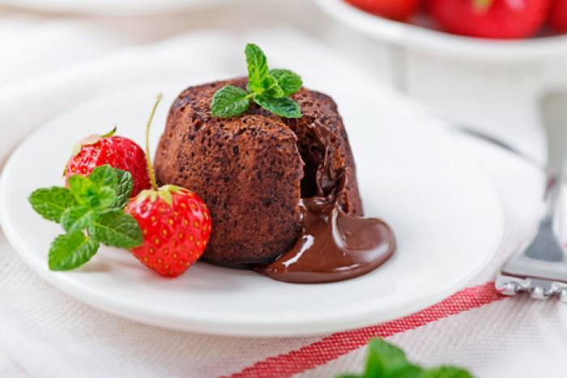

<!DOCTYPE html>
<html lang="en">
</html>
<html>
    <head>
       <title>Chocolate lava cake</title>
       <meta charset="utf-8"/>
    </head>
    <body>
        <h1>Chocolate lava cake</h1>
        
        <h3>"Legend has it that this dessert was the result of a major catering disaster. The dessert
            <br> for this particular event was to be individual chocolate cakes, but someone took them 
            <br> out of the ovens too soon and the centers were not cooked enough and still liquefied. 
            <br> Well, there was no time to take them off the plates and bake them more, so the chef 
            <br> simply had his wait staff introduce the dessert as Chocolate 'Lava' Cake! Brilliant!"</h3>
        <p><em>By Anonyme</em></p>
        <br>
        <h3>Ingredients for 4 servings</h3>
        <ul>
            <li>butter as needed</li>
            <li>2 egg yolks</li>
            <li>2 eggs</li>
            <li>3 tablespoons white sugar</li>
            <li>3 ½ ounces chopped dark chocolate</li>
            <li>5 tablespoons butter</li>
            <li>4 teaspoons unsweetened cocoa powder</li>
            <li>3 tablespoons flour</li>
            <li>1 pinch salt</li>
            <li>⅛ teaspoon vanilla extract</li>
        </ul>
        <br>
   <h3>Steps</h3>
       <ol>
           <li>Generously butter the inside of 4 (5 1/2 ounce) ramekins. Place them
                 <br>in a casserole dish.</li>
           <li>Whisk together egg yolks, eggs, and sugar in a bowl until light,  
                  <br>  foamy, and lemon colored.</li>
            <li>Melt chocolate and butter in a microwave-safe bowl in 30-second intervals, stirring
                  <br>after each melting, 1 to 3 minutes.</li>
            <li>Stir melted chocolate mixture into egg and sugar mixture until combined.</li>
            <li>Sift cocoa powder into the mixture; stir to combine.</li>
            <li>Sift flour and salt into the mixture; stir to combine into a batter.</li>
            <li>Stir vanilla extract into the batter.</li>
            <li>Transfer batter to a resealable plastic bag. Snip one corner of the bag with
                  <br>scissors to create a tip.</li>
            <li>Divide batter evenly between the prepared ramekins; tap gently on
                  <br>the counter to remove any air bubbles.</li>
            <li>Refrigerate 30 minutes.</li>
            <li>Preheat an oven to 425 degrees F (220 degrees C).</li>
            <li>Arrange the ramekins in a casserole dish. Pour enough hot tap water into the
                  <br>casserole dish to reach halfway up the sides of the ramekins.</li>
            <li>Bake in the preheated over for 15-18 minutes. Set aside to cool for 15 minutes.</li>
            <li>Loosen the edges from the ramekin with a knife. Invert each cake onto a plate and 
                  <br>dust with powdered sugar. </li>
        </ol>
    </body>
</html>